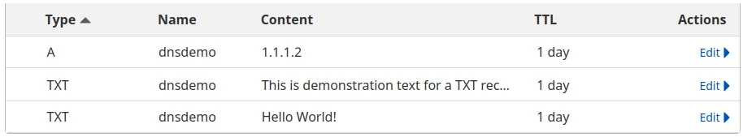

Domain Setup¶
In the Website Primer section, and for most of this handbook, DNS is treated like one giant global directory listing of all websites on the Internet. However, this is an extreme simplification that focuses on how end users interact with this type of service.
As “the website person” for your 12-Step group, you will most likely be responsible for maintaining your groups domain in this global index.
Registrars¶
A DNS registrar is a company that facilitates the registration and management
of domain names on behalf of individuals and organizations,
allowing them to manage DNS information on the Internet.
Registrars handle the administrative tasks of domain registration, ensuring that each domain is unique and properly configured in the DNS system.
Further Reading
Cloudflare provides a great explanation of how the registrar/registry/tld relationship works.
Reputable DNS registrars also provide a web interface that allows administrators to manage DNS Records within this global index. Most also provide the option to update Name Server (NS) records, allowing a company other than the registrar to be responsible for DNS Records that are presented to end users.
Recap
DNS is a distributed system, spread across thousands of organizations. Registrars allow consumers to register and maintain domain names within this global index.
Predatory Registrars¶
Unfortunately, most registrars engage in predatory practices, attempting to upsell unnecessary services or charging inflated prices for renewals.
Common tactics to watch out for include:
Privacy Protection Fees: Charging for “enhanced” privacy protection, despite ICANN mandating privacy by default,
Surprise Services: Automatically enrolling customers in additional services like web hosting or backups without clear consent, often through pre-checked boxes during checkout.
Domain Fronting and Squatting: Registering domains that users search for or similar variants, then selling them at inflated prices.
Domain Sniping: Monitoring for domains that will expire soon in hopes the original owner will pay to get it back.
Renewal Price Hikes: Increasing renewal fees significantly higher than initial registration costs.
Complicated Transfers: Creating obstacles for transferring domains away from their service, making it seem “not woth the effort”–it is.
These registrars have been reported to engage in various predatory practices:
GoDaddy: Aggressive and misleading marketing tactics for over-priced services with frequent price changes; known for domain sniping and fronting.
1&1: Known for confusing pricing structures and non-responsive support.
Network Solutions: Infamous for domain fronting and high renewal prices.
BlueHost: Known for surprise services/fees and complicated transfers.
Hostinger: Uses domain fronting/squatting and renewal price hikes.
Squarespace: Aggressive upselling and complicated transfers.
Register: Known for surprise services and hidden transfer fees.
As a general rule of thumb, any registrar that offers Wordpress websites as an add-on service is likely worth avoiding.
Reputable Services¶
Nearly all registrars participate in some level of predatory behavior, making it difficult to find reputable services. Although a “safe list” cannot be provided, the subjective lists below aim to provide some critical review to begin your own research.
Registrars:
Dynadot: Provides a clean interface with transparent pricing and clearly labeled up-charges.
CloudFlare: Offers DNS registration and renewal at registry cost, offering their registrar service for free, in exchange for using only their name servers.
Porkbun: Offers transparent pricing with a simple and clean user interface, although customer service is terrible and renewal rates can be high.
Turn-Key Websites (also registrars, but with very limited DNS support):
inMotion Hosting: Provides fully-managed Wordpress websites that include many optimally-configured caching features.
Pantheon: Provides optimized websites using Drupal, rather than Wordpress.
Recap
It is important to research various forums for recent reviews to determine which registrar to do business with.
Fully Qualified Domain Name¶
A Fully Qualified Domain Name (FQDN) consists of a series of labels separated by dots. These are structured similar to a mailing address, with the Top-Level Domain (TLD) on the far right, and then the Second-Level Domain (SLD) directly to the left, followed by optional Subdomains.
Web browsers use this FQDN in the URL they use to request a web resource.
FQDN Examples:
FQDN |
Subdomain (Hostname) |
TLD |
|
|---|---|---|---|
www.google.com |
www |
google.com |
com |
google.com |
@ |
google.com |
com |
drive.google.com |
drive |
google.com |
com |
handbook.recoverysource.net |
handbook |
recoverysource.net |
net |
site.dev.handbook.recoverysource.net |
site.dev.handbook |
recoverysource.net |
net |
aa0-1.sober.page |
aa0-1 |
sober.page |
page |
testbox1.devnet.example.com |
testbox1 |
example.com |
com |
‘@’ is a common DNS term (symbol) that indicates ‘root (or naked) domain name’
Administrators are generally free to manage their DNS records as they see fit, creating whatever subdomains may be needed.
Note
This is what enables Sober Page to offer free “3rd-level” domains, via sober.page (and sobersupport.group).
Record Types¶
Every FQDN placed into DNS is known as a “DNS Record.” These records have specific types that identify the exact type of information the record contains.
These are the most common types of DNS records:
Type |
Description |
Purpose |
|---|---|---|
A |
Address |
Maps a domain name to an IPv4 address |
e.g. |
||
AAAA |
Quad-A |
Maps a domain name to an IPv6 address |
e.g. |
||
CNAME |
Canonical Name |
Maps an alias or alternative name for a domain to the actual domain |
e.g. |
||
MX |
Mail Exchanger |
Specifies the mail server responsible for receiving email for a domain |
e.g. mail for |
||
NS |
Name Server |
Specifies the computer name responsible for a domain |
e.g. |
||
TXT |
Text |
Stores text information about a domain, such as public keys |
e.g. |
Each FQDN can be represented by multiple DNS records. Both DNS records will be returned to the computer making the request, which enables (round-robin) redundancy.
Follow Along¶
For the following exercise, you can either use our domain and DNS records, or you can lease a domain from a registrar and configure your own DNS records to look like ours.
Our dnsdemo DNS records:
In order to query DNS and validate records have been updated, we need either the dig command line utility, or an online option such as google dig or dig webUI.
Try these DNS queries for yourself!
$ dig +short dnsdemo.sober.page TXT
"Hello World!"
"This is demonstration text for a TXT record. :)"
$ dig +short dnsdemo.sober.page A
1.1.1.2
Chapter Recap¶
DNS registrars allow website administrators to manage DNS records on the Internet. These records form the FQDN portion of the URL that users type into their web browser in order to view your website.
In other words, this is how a website is put onto the internet.